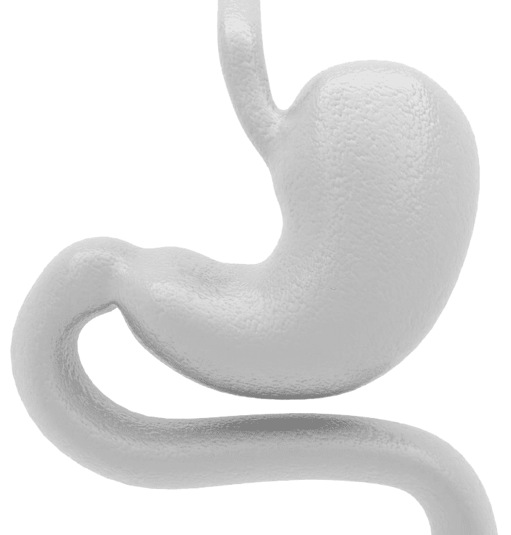
Serial Transverse Enteroplasty
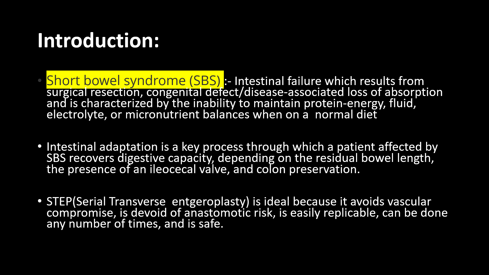
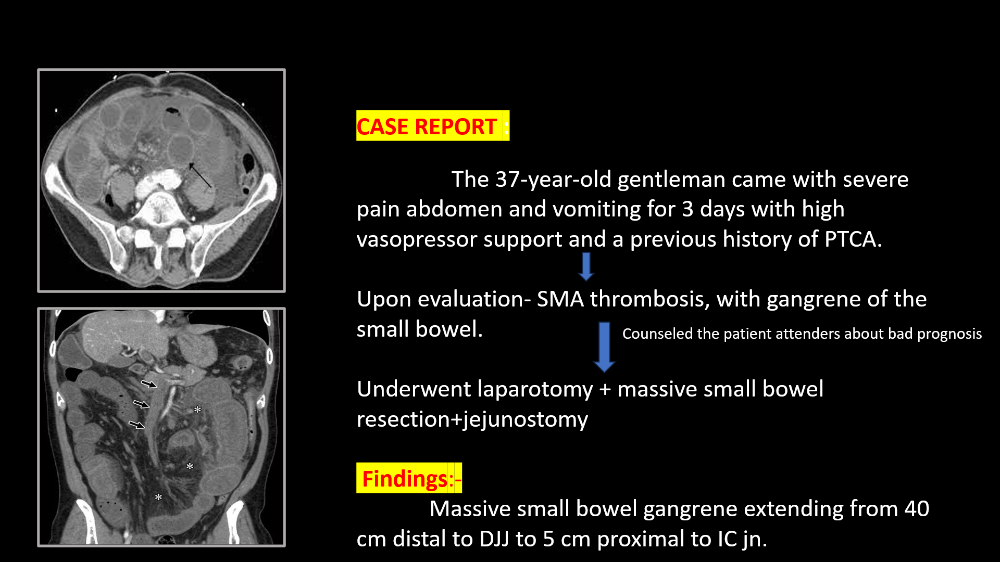
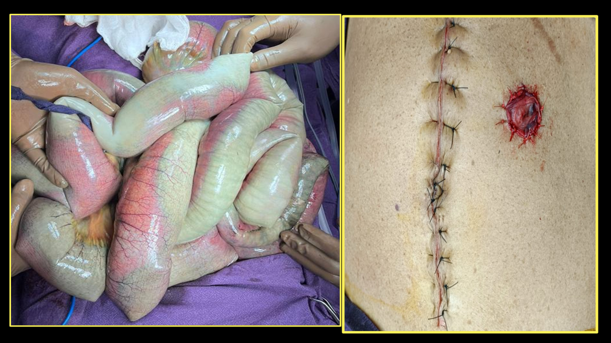
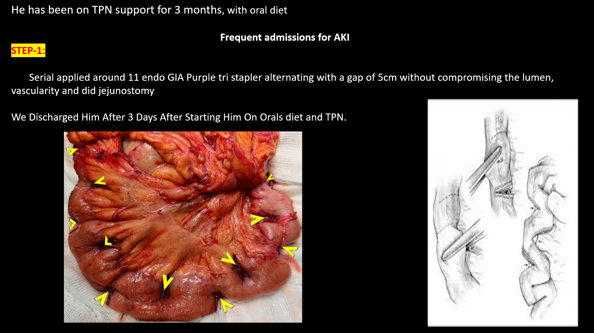
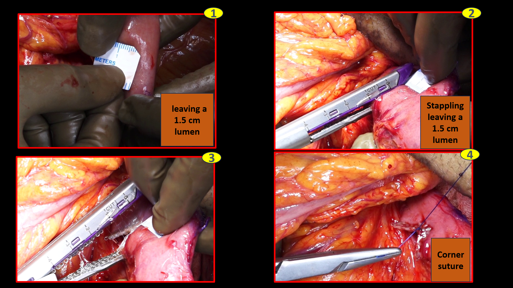
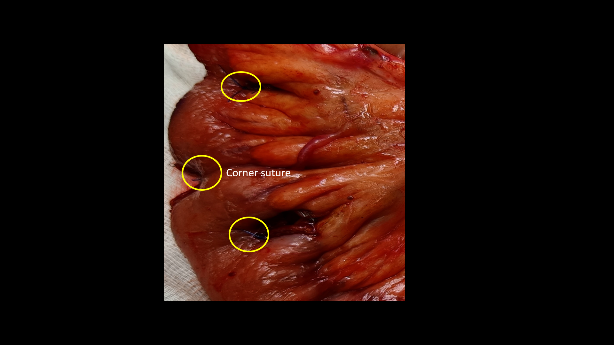
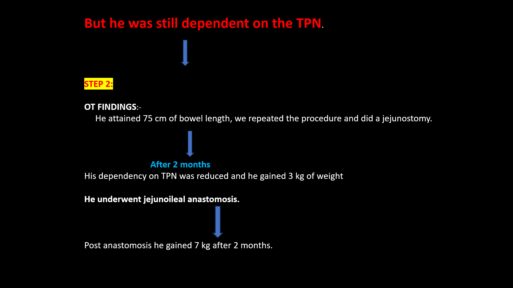
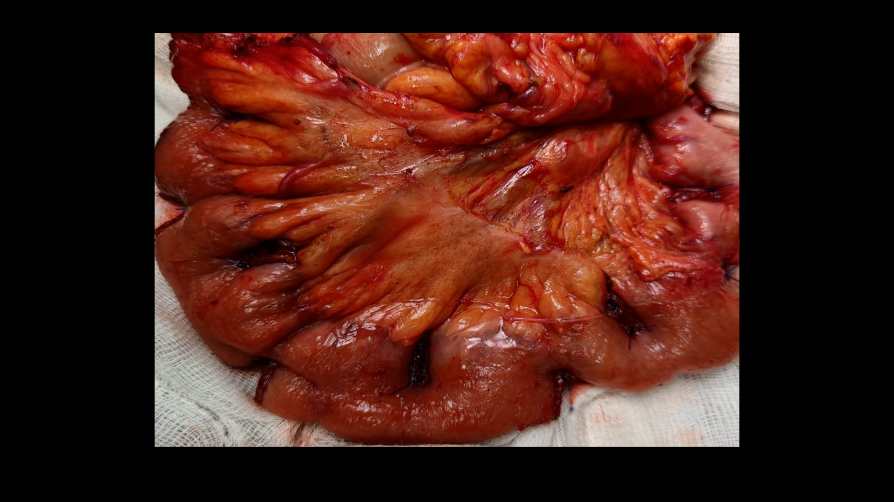
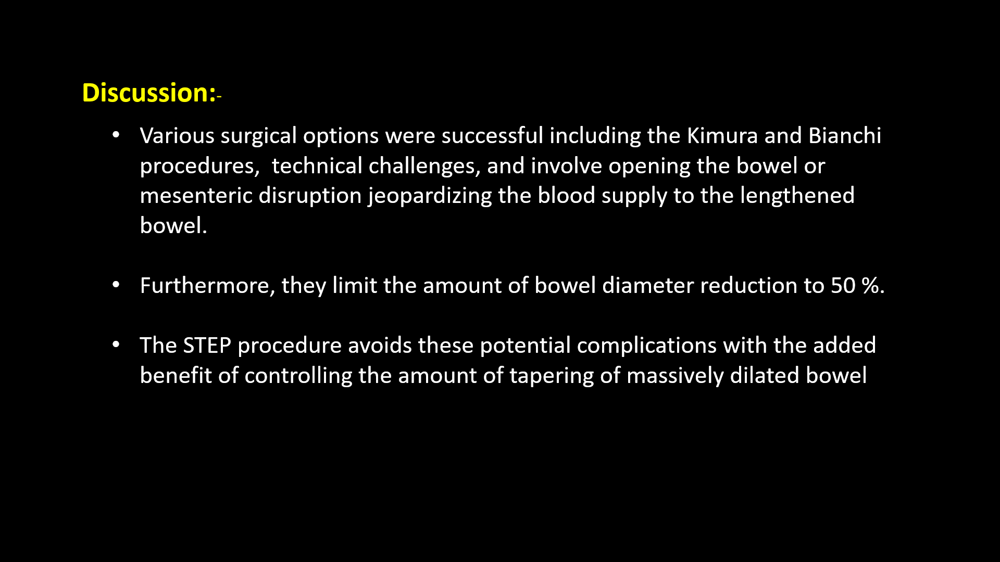
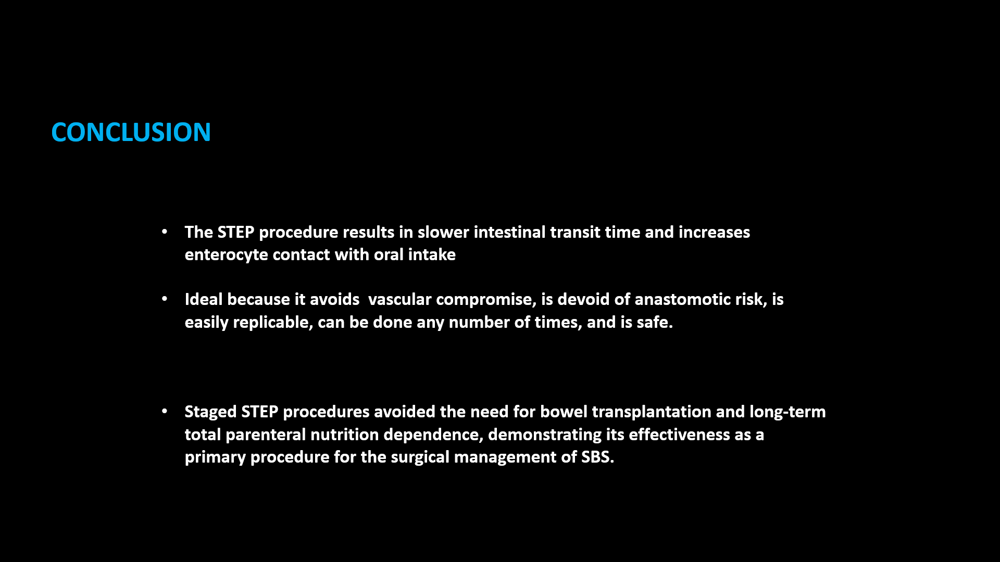
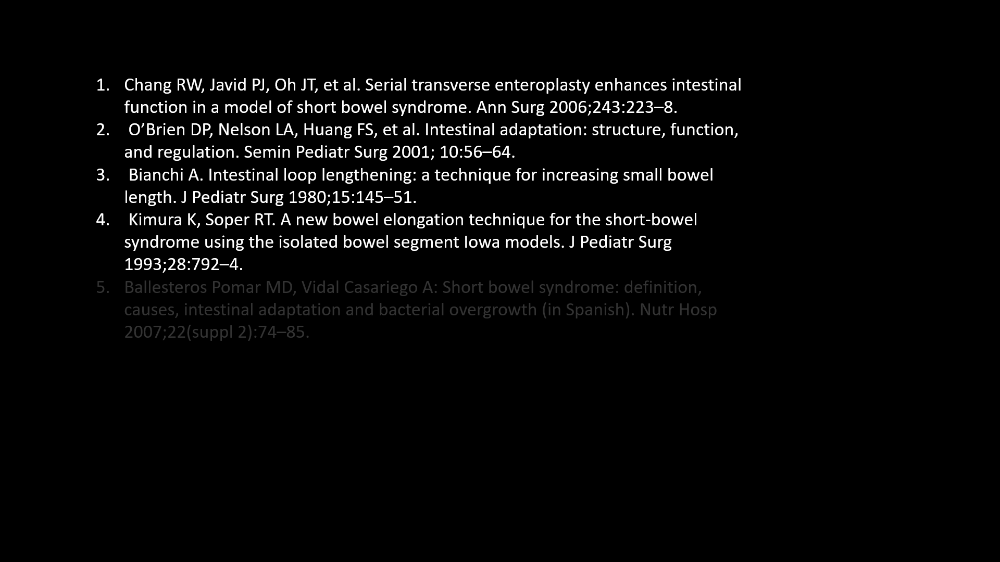
Chronic Calcific pancratitis-whipple procedure


COUNTLESS STONES


Complex HPB series

A 57-year-old gentleman with obstructive jaundice due to a hilar stricture. Radiology and Spyglass Cholangioscopic biopsies did not yield a definitive diagnosis. After previously being stented elsewhere, we performed an extrahepatic bile duct excision and sent for Frozen biopsy, results revealed adenocarcinoma, leading us to proceed with Right Hepatectomy, Caudate Lobectomy, Extra biliary Tract Excision with Lymphadenopathy, and Left Roux En Y Hepatico-Jejunostomy. The procedure went smoothly, Grateful for the opportunity to overcome diagnostic dilemmas!
Remnant Gall Bladder


Diaphragmatic eventration
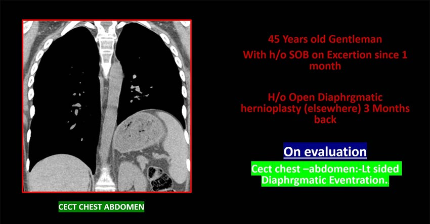
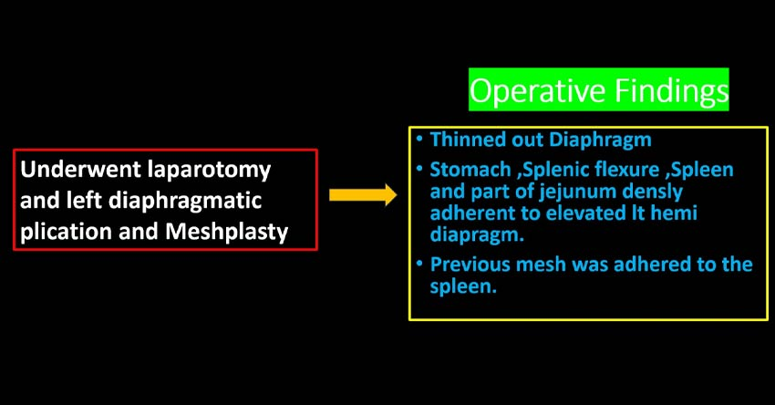
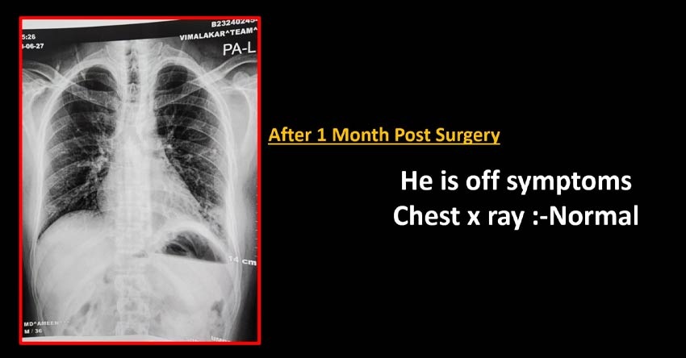
RETROPERITONEAL RETRO CAVAL TUMOR
CASTLEMAN DISEASE


TRACHEOESOPHAGEAL FISTULA IN ADULT
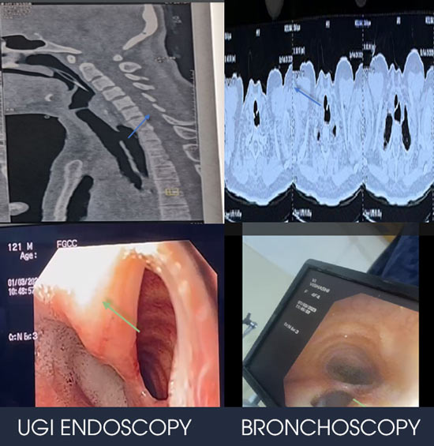
28 years old lady,with history of recurrent LRTI SINCE Child hood,and diagnosed to have TOF.
On admission, bronchoscopy revealed-TOF 3 cm below the vocal cards,2 cm defect.
Ugi endoscopy-TOF Aproxx 16 cm from Incisors.
INTRA OPERATIVE
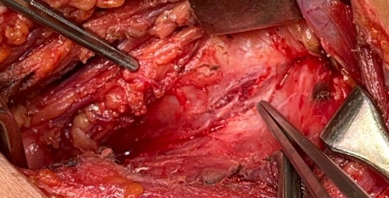
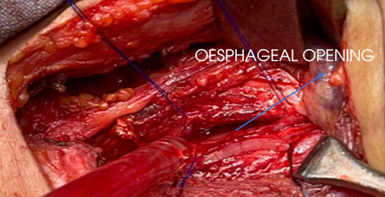
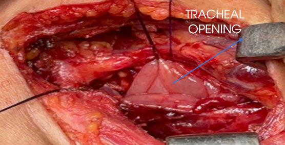
We did laparoscopic feeding jejunostomy,tracheoesophageal fistula Repair with flap(Sterno thyroid).
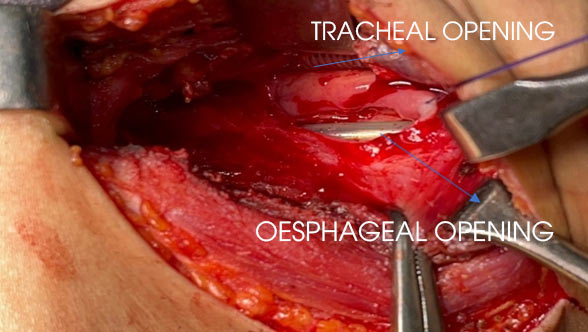
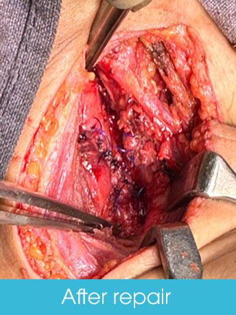
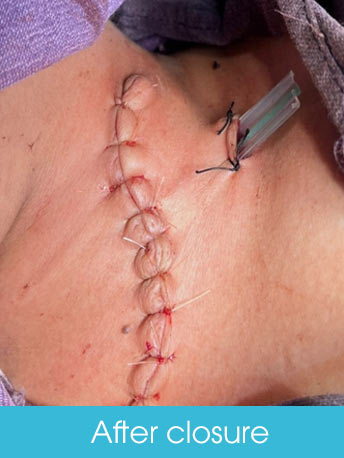
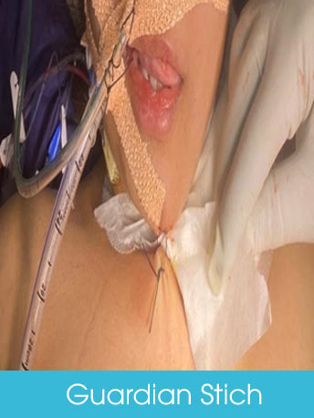
COMPLEX WHIPPLE'S-1
52 years old lady with yellowish discoloration of eyes, itching Evaluated outside and diagnosed to have a mass in the head of pancreas with Total bilirubin:17 mg/dI, CA 19 - 9 - 1238. After the failed attempt of ERCP and CBD stenting tried for Endoscopic choledochoduodenostomy elsewhere, which has led to duodenal perforation and biliary peritonitis.


Then came to us, after resuscitation we took her for Surgery
Intraoperative findings
- Bilious Stained Free Fluid with Flakes in The Peritoneum.
- Multiple Perforations Over Duodenums With Necrotic Walls.
- Small Rent in the CHD.
- Inflamed and oedematous omentum.
- Growth around 4*3 cm in the head of pancreas, with dilated CBD around 8mm
- Smv and sma free from mass.
- Peripancreatic, periportal and perihepatic artery lymphadenopathy
- No evidence of metastasis
- Postoperative recovery is smooth without any complications.
- Discharged on POD-5.

COMPLEX WHIPPLE'S-2
52 years old lady with yellowish discoloration of eyes, itching Evaluated outside and diagnosed to have a mass in the head of pancreas with Total bilirubin:17 mg/dI, CA 19 - 9 - 1238. After the failed attempt of ERCP and CBD ste
Outside planed for Neoadjuvant chemotherapy (FOLFIRINOX), took one cycle. But he was intolerant to it Then came to us, after explaining all the pros and cons, well-informed high-risk consent, he underwent surgery i.e., DIAGNOSTICLAPAROSCOPY followed by WHIPPLE PROCEDURE+SMV. PORTAL VEIN RESECTION AND RECONSTRUCTION(DACRONGRAFT).


IMPRESSION
- Head and uncinate process of pancreatic mass encasing and marrowing SMV, /abutting SMA with atrophied body and tail with dilated MPD
- Cholelithiasis.
- Bilateral non obstructive renal calculi.
- Left simple renal cyst.
Intraoperative Findings:
- Mass In Pancreatic Head and Uncinate Process -5X3.
- Mass Infiltrating Into SMV, portal And Splenic Vein Confluence, abutting SMA.
- Peripancreatic, periportal And Hepatic Artery Lymphadenopathy.
- No E/O Metastasis.
RESECTED SPECIMEN


- Postoperative recovery is smooth without any complications.
- Discharged on POD-5.
NUEROENDOCRINE TUMOR OF PANCREAS
32 year old lady came to us with chronic pain abdomen since long time, found to have mass in head of pancreas on CT .EUS and UGI Endoscopy done S/o of NET.A DOTANAC PET WAS DONE S/O localized disease. After thorough evaluation went for WHIPPLE Procedure.
Pancreatic neuroendocrine tumors (pancreatic NETs or PNETs) Is a rare tumor with incidence of 10 in million population. Needs proper evaluation before Definitive management
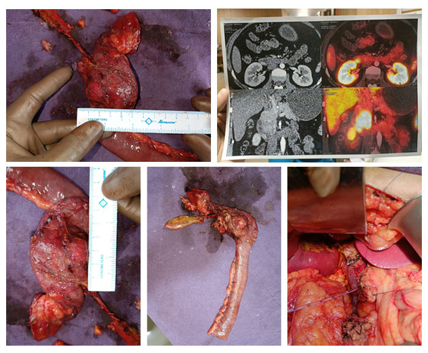
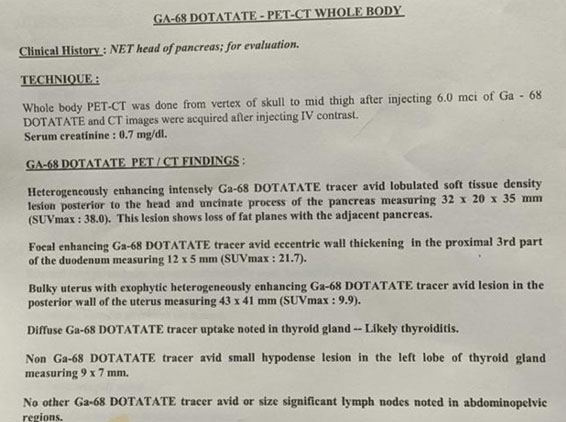
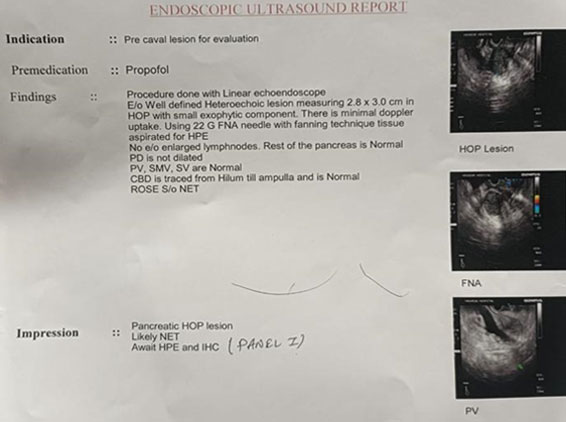
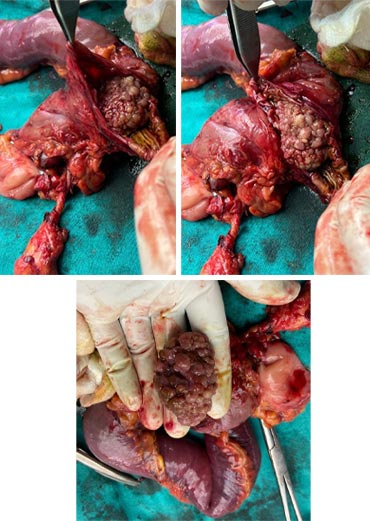
Whipples For Benign Disease
Whipples(Pancreaticoduodenectomy) is usually reserved for pancreatic and periampullary cancers. In selected cases of Brunner gland hyperplastic polyp(large size) with bleeding and GOO, where,Endoscopic Measures Failed,Whipples have the role. This was one such patient with vomitings melena since 2 years.Evaluated with UGI Endoscopy:- 4*6 cm polypoidal growth in D2 biopsy taken, CT showed large lesion in D2 with features of GOO.
UGI guided polypectomy was attempted,which was futile excersice.Biopsy is benign etiolgy. Patient underwent whipples. Though the surgery is difficult due to multiple endoscopic interventions and scarring secondary to reccurant inflammation the post op recovery was smooth. This patient is completely free from symptoms post surgery with good nutritional recovery.
CHRONIC CALCIFIC PANCREATITIS
Dear Sir,
With all your help and blessings from God..Akash started going to school after almost 5 years..this is new beginning of his life..His parents wanted convey thier Gratitude to you and wish
God give good health and wealth for you and your family members
Master Akash Came to me with severe agonising pain, lost his schooling, drained financially.
After going through his past investigation diagnosed to have Chronic calcific Pancreatitis with PD of 9 mm.
Underwent FREYS Procedure,discharged him on POD-5.
After 1month , I felt so happy as a HPB Surgeon, that he started schooling again.

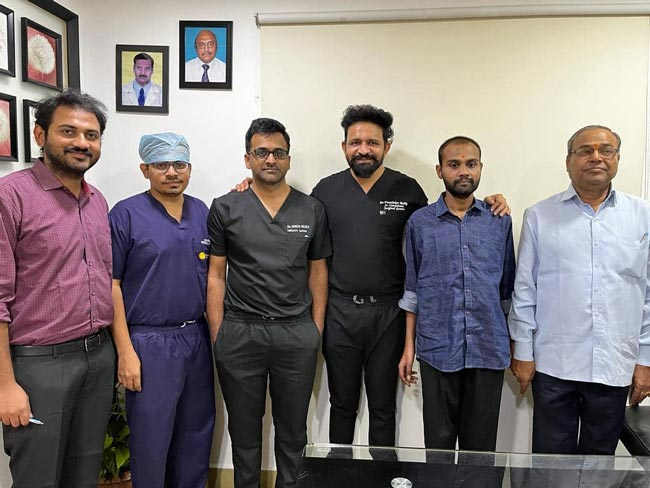
A young lad standing beside me is a warrior for sure
A young lad standing beside me is a warrior for sure. He fought against his ill by using a weapon of will.
He came to me with severe abdominal pain,vomitings and was diagnosed with Acute necrotising pancreatitis with MODS for which initiated on conservative management. Later due to features of sepsis, underwent pancreatic necrosectomy and it was a night mare for a surgeon who knew how bad a pancreatitis does to a person.He was on Ventilatory support in ICU for a longtime.Everybody lost hope including me except the young boy.A positive attitude by a patient and the whole family means a lot to a treating surgeon.We as a team worked relentlessly to bring the boy out of the crisis and i confidently say that we did it!!!. He got discharged and came today to me, but this time FIT as FIDDLE. It's astonishing to see such a fast recovery. Hence, he is a WARRIOR.
CENTRAL HEPATECTOMY
Central hepatectomy, Segment orientated liver resection, Mesohepatectomy, Middle hepatic lobectomy, Central bisegmentectomy
Central hepatectomy, defined as anatomical segment 4, 5, 8 ± 1 liver resection, is a promising parenchymal-preserving procedure in patients with centrally located liver malignancies.
This was 49/f came to us after being evaluated elsewhere, diagnosed to have HCC in 5&8.Underwent central hepatectomy 20/03/2019.Post operative period was uneventful.
Central Hepatectomy Can Achieve Similar Overall Patient Survival And Disease-Free Survival Rates As Conventional Major Hepatectomies. Our Findings Suggest That Central Hepatectomy May Be Considered An Acceptable Procedure For Treatment Of Centrally Located Malignances And May Be The Procedure Of Choice In Patients With Compromised Liver Function. It Has The Advantages Of Preserving Parenchyma And Seemingly Without Oncological Compromise.( Central hepatectomy for centrally located malignant liver tumors: A systematic review By Ser Yee Lee, Department of Hepatopancreatobiliary and Transplant Surgery, Singapore General Hospital, Singapore 169608)
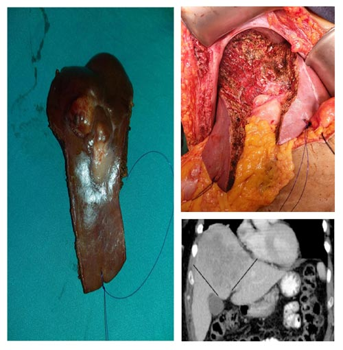
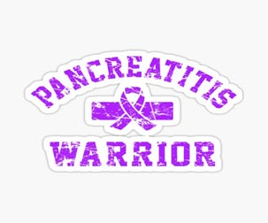
1. A MAN WITH DETERMINATION
If you ask me,
What a pancreatitis does to a patient in worst scenario with best out come??, I can give him as a perfect example
Way back to SEP 2018,
A 28 Year old gentleman after 15 days of admission elsewhere, came to our hospital with pain abdomen, fever and admitted under team medical gastroenterology on 5/09/2018. He was diagnosed to have acute necrotising pancreatitis with CTSI-10.
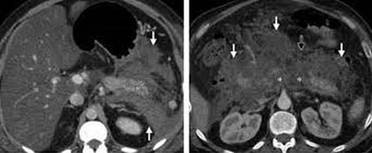
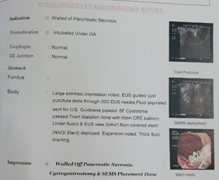
He was started on conservative management, i/v/o worsening of symptoms he had undergone EUS + Cystogastrostomy and SEMS Placement (NAGI Stent-6cm) on 17/09/2018,Which is s/o WOPN ,which was indenting posterior surface of stomach.
Despite of that,patient started deteriorating,so check endoscopy was done and confirmed draining stent on 21/09/2018,
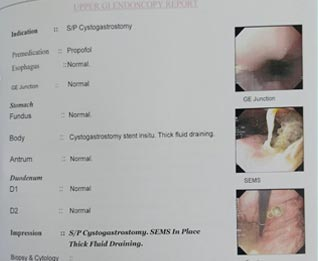
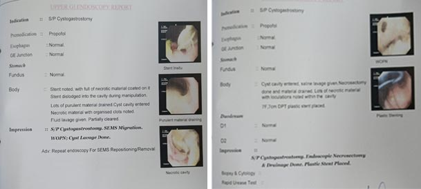
BUT, I/V/O ARDS with Respiratory failure and AKI, patient got intubated (23/09/2018) and on dialysis. On Recheck endoscopy revealed Migrated SEMS (26/09/2018).Again they took for ENDOSCOPIC CYST LAVAGE and PLASTIC STENT PLACEMENT (7 CM DPT STENT) , but it was futile exercise.
Despite of all endoscopic measures, there was no improvement in patient condition, CECT Abdomen and pelvis revealed Acute Necrotising Pancreatitis with moderate ascites with migrated SEMS and Plastic stent.
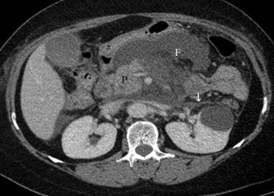
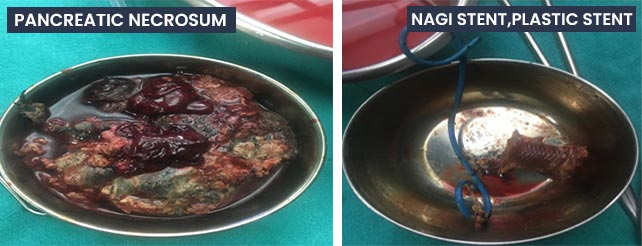
Then Our TEAM(Surgical Gastroenterology) opinion was sought, on 1/10/2018,we have explored the abdomen, which revealed 1500 ml of frank pus with thick necrotic material,NAGI stent and plastic stent.
After washing thoroughly, multiple drains placed.
He was extubated on POD -4 (4/10/2018)(12 days on ventilator), slowly vasopressor support weaned off. After stabilisation he was to shifted ward, Antibiotics slowly tapered, drains removed. Started on oral diet on pod-5. Finally discharged him after 35 days of admission on 10/10/2018.
He was asymptomatic and on regular follow up for 2 years.
On 29/03/2021, he presented to ER with pain abdomen, vomiting, fever and loose motions in the last 5 days
It was a period of covid-19, on evaluation found to have PANCREATICOCOLIC FISTULA .
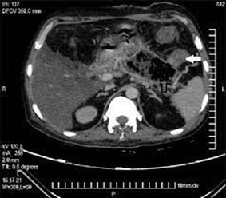
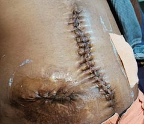
Took for surgery i.e,.LAPAROTOMY +ADHESIOLYSIS + DIVERTION END ILEOSTOMY on 4/04/2021.
After initial stabilization in SICU, he was shifted to ward. Stoma started functioning on POD -3. Discharged in stable condition. (15/04/2021.). After 3 months ileostomy reversal was done
He was on Regular follow up till 08/2022, then he again developed pain abdomen,on evalution he found have,Acute on chronic pancreatitis, calculous cholecystitis, dilated large bowel with incisional hernia at RIF with enterocele, he was admitted and managed conservatively for two IP admissions.
Post discharge he was alright for 15 days, but i/v/o recurring symptoms, we took a decision of exploration, which revealed ,Dense adhesions of small bowel with paritis, dilated large bowel and distal small bowel, Defect of size 5cm with omentum and large bowel as content in RIF.Adhesiolysis, Resection (Descending colon) and Anastomosis(colo-colic), cholecystectomy done with primary repair of the defect.
After passing stool on POD -4, He was started on diet and discharged him on pod-6.
On further follow up he was doing well.
Hence, He Is a Man of Determination for Sure.
2. PANCREATIC DUCTAL DISRUPTION SYNDROME - AN AGGRESIVE APPROACH
A 32-year-old gentleman, known alcoholic, presented with shortness of breath and pain abdomen for 7 days. Initially managed elsewhere with chest tube and ERCP (PD stenting),referred to our hospital for further management.
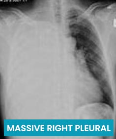
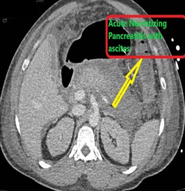
On Arriving, Immediately Repositioning Chest Tube Was done Which Drained 3 Liters of Fluid, Sent for Analysis. A Ct of Chest and Abdomen Done Which Revealed Acute Pancreatitis with Ascites and Right Pleural Effusion. So, USG Guided Pig Tail Of 12 F Was Placed, Drained Nearly 1000 ml of Fluid.
Shifted To ICU, Started on Octreotide Infusion And TPN.
MRCP was done which revealed distal pancreatic ductal disruption.
After Hemodynamic Stabilization, Distal Pancreatectomy Done on Day 4 Of Admission.
Operative Findings
- Free Fluid of 1 Litre Drained.
- Disrupted Distal Pancreatic Duct.
- After Through Lavage Drain Placed Closure Done.
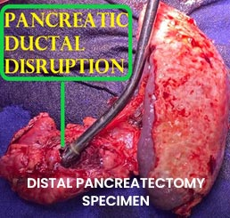
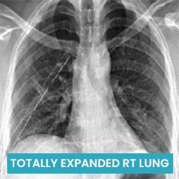
Complete Recovery Was Seen in A Week,Discharged On 9 Th Pod.Further Follow Up After 2 Months Was Unremarkable
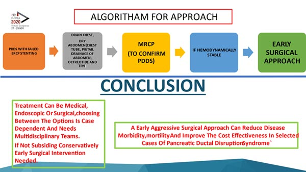
3. HEMOSUCCUS PANCREATICUS WITH CHRONIC CALCIFIC PANCREATITIS
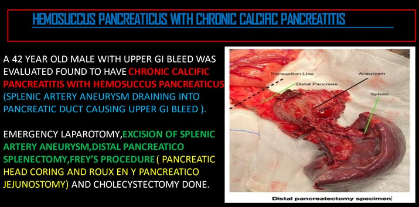
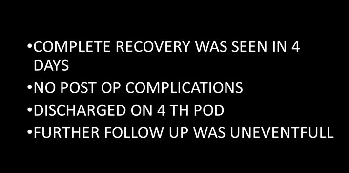